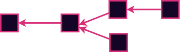
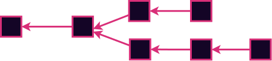
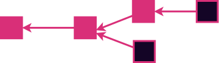
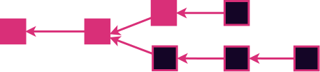

<!DOCTYPE html>
<html lang="en">

<head>
  <meta charset="utf-8" />
  <meta name="viewport" content="width=device-width, initial-scale=1.0, maximum-scale=1.0, user-scalable=no" />

  <title>Confirmations and Finality</title>
  <link rel="icon" href="./../../assets/favicon.svg" />
  <link rel="shortcut icon" href="./../../assets/favicon.png" />
  <link rel="stylesheet" href="./../../dist/reset.css" />
  <link rel="stylesheet" href="./../../dist/reveal.css" />
  <link rel="stylesheet" href="./../.././assets/styles/PBA-theme.css" id="theme" />
  <link rel="stylesheet" href="./../../css/highlight/shades-of-purple.css" />

  <link rel="stylesheet" href="./../.././assets/styles/custom-classes.css" />

</head>

<body class="site">
  <header class="site-header">
    <!-- This logo is a link only on the watching server, not the production build -->
    <a href="">
      
    </a>
  </header>
  <main class="reveal">
    <article class="slides">
      <section  data-markdown><script type="text/template">

# Confirmations and Finality
</script></section><section ><section data-markdown><script type="text/template">
# What is Finality?

<aside class="notes"><p>In general finality will be conneced to some assurances or promises, implicit or explicit that transactions will not be reversed.</p>
</aside></script></section><section data-markdown><script type="text/template">
# What is Finality?

How does BTC answer this question?
</script></section><section data-markdown><script type="text/template">
## Finality in Nakamoto Consensus

<pba-flex center>

- Longest chain is "best"... for now
- Someone could always start mining a chain<br/>and, with low but non-zero probability,<br/> end up with it longer.
- There could _already_ be a longer chain<br/>that you just haven't heard of.

<pba-flex>

<aside class="notes"><p>This is to say that Nakamoto consensus is NOT safe on the real asynchronous internet. In practice, as long as
blocks can be downloaded and executed much more quickly than the target block time, it is usually good enough.</p>
<ul>
<li>Longest could also mean most accumulated work</li>
</ul>
</aside></script></section><section data-markdown><script type="text/template">
# Probabilistic Finality

- NOT binary
- Expressed as a probability (%)
- Represents confidence that a block will not be reversed
- The more work is put on top of the block the bigger the confidence
- Implicit
</script></section></section><section ><section data-markdown><script type="text/template">
# Deterministic Finality

- Binary
- Explicit
- Requires consensus to establish
</script></section><section data-markdown><script type="text/template">
# Deterministic Finality

<pba-flex center>

- Based on traditional methods (BFT)
- Requires an honest-majority finite authority set

</pba-flex>

<!-- two flexes needed so the next bullet points don't show too early, margin hack... TODO -->

<pba-flex center style="margin-left: 48px">

- Consensus protocol that assumes honest majority
- Economic game that keeps them honest

</pba-flex>
<!-- .element: class="fragment"-->

<aside class="notes"><p>If you want deterministic finality, it basically means employing BFT agreement protocols that we talked about in the history lesson. This means we need a finite authority set with an honest majority. And that means we need incentives to keep them honest.</p>
</aside></script></section><section data-markdown><script type="text/template">
# Incentives: Game Theory!

Abstractly: You behave honestly<br/>when the utility of doing so exceeds the cost.

Incentive designers may potentially:

<pba-flex center>

- Reward honest behavior
- Punish (aka slash) dishonest behavior

</pba-flex>

<aside class="notes"><p>Many systems use both of these, but doing so is not strictly necessary. Even without slashes, the opportunity cost of staking and the missed rewards from authoring invalid blocks may be sufficient.</p>
<p>It is often the case that blockchain systems give rewards in the authorship and punishments in the finality. There is no fundamental reason for this; it is just a little more straightforward to implement.</p>
</aside></script></section></section><section ><section data-markdown><script type="text/template">
# Case Study: Tendermint

<pba-flex center>

- Authorship is like Aura - simple round robin
- Naive but **simple** BFT implementation
- If the block has enough votes<br/>by the end of the slot, it is finalized.<br/>
  Otherwise, it is rejected via timeout.
- "Instant finality"
- Forkless - Forks are disallowed<br/>because blocks can only be authored<br/>on finalized parents.

</pba-flex>

<aside class="notes"><p>Tendermint assumes a partially synchronous network, like all the BFT based systems - That is to say that messages may not arrive immediately, but will arrive within a finite time bound. In practice this means it is slot-based just like so many of the authoring schemes.</p>
<p>Tendermint is often touted as &quot;instant finality&quot;. It is instant in the sense that finality is tied to authorship. In practice this means that authorship, which is inherently O(n), is slowed down to stay in sync with finality which is O(n^2). They sacrifice liveness to guarantee absolute safety at all times.</p>
</aside></script></section><section data-markdown><script type="text/template">
# Tendermint Deep Dive

<pba-flex center>
<ol>
<li class="fragment">Wait for a block (or author one if it is your turn)</li>
<li class="fragment">Prevote
  <ul>
    <li>If the block is valid, Prevote for it.</li>
    <li>If the block is invalid, Prevote `Nil`</li>
  </ul>
</li>
<li class="fragment">Precommit
  <ul>
    <li>Wait for 2/3 prevotes then Precommit</li>
    <li>If you don't get 2/3 prevotes, Precommit `Nil`</li>
  </ul>
</li>
<li class="fragment">Complete
  <ul>
  <li>Wait for 2/3 Precommits them finalize</li>
  <li>If you don't get it, throw the block away</li>
  </ul>
</li>
</ol>

[Very useful blog post](https://medium.com/softblocks/explaining-how-tendermint-consensus-works-433066cbc465) <!-- .element: class="fragment" -->

</pba-flex>
</script></section></section><section ><section data-markdown><script type="text/template">
# Hybrid Consensus

<pba-cols>
<pba-col>


</pba-col>
<pba-col>
<pba-flex center style="font-size: 0.7em; margin-left:-50px">

- Separates block production from finality.
- Block production stays live even if finality lags.
- Allows lower overhead in the finality layer.
- Used in Substrate (BABE + GRANDPA)

</pba-flex>
</pba-col>
</pba-cols>
</script></section><section data-markdown><script type="text/template">
# What About Re-Orgs


<br/>


<aside class="notes"><p>Previously we talked about how a node&#39;s view of the best block can change, and that is called a re-org.</p>
</aside></script></section><section data-markdown><script type="text/template">
## Modified Fork Choice Rule


<br/>


Only extend best finalized chain
<aside class="notes"><p>Once you have a finality gadget installed, you have to make sure you only ever author on top of finalized blocks. Even if another chain is longer.</p>
</aside></script></section></section><section ><section data-markdown><script type="text/template">
# Case Study: Grandpa

<pba-flex center>

- Deterministic finality _only_
- Requires an external block authoring scheme<br/> with its own liveness proof.
- Kind of like Tendermint but better.
- Finalizes chains, not blocks.

</pba-flex>
</script></section><section data-markdown><script type="text/template">
# GRANDPA

- finality gadget
- does not manage block production
- requires 2/3 for consensus
- [...]
</script></section><section data-markdown><script type="text/template">
# GRANDPA

- finalizes chains and not just blocks


<aside class="notes"><p>BFT finality with $n$ authorities is in $O(n^2)$.
Tendermint does this at <strong>every block</strong>.
This bounds the size of the authority set.</p>
<p>With separated, we treat each vote as a vote not only for one block,but also for each ancestor block.
This significantly reduces the number of total messages sent.
Allows the chain to stay live even when many validators are offline</p>
</aside></script></section><section data-markdown><script type="text/template">
# Grandpa Prerequisite

- Only fully approved (approval checking) blocks are considered
- Finality is at the end of the ELVES Pipeline
  - Collation, Backing, Availability, Approval Checking -> FINALITY
</script></section><section data-markdown><script type="text/template">
## A GRANDPA Round

Each validator **broadcasts** a **prevote** for the **highest block** that it thinks **should** be **finalized**

- For **honest** validators, this block **must include** the chain that was previously finalized
- This **new chain** could be **several blocks** longer than the **last finalized** chain

A **validator** that is designated as the **primary** broadcasts the highest block that it thinks could be final from the previous round
</script></section><section data-markdown><script type="text/template">
## A GRANDPA Round


<aside class="notes"><ul>
<li>7 = # Validators</li>
<li>5 = # Threshold</li>
</ul>
</aside></script></section><section data-markdown><script type="text/template">
## A GRANDPA Round


<aside class="notes"><ul>
<li>7 = # Validators</li>
<li>5 = # Threshold</li>
</ul>
</aside></script></section><section data-markdown><script type="text/template">
## A GRANDPA Round

Each validator **computes** the **highest block** that can be **finalized based** on the set of **prevotes**

- i.e. we find the **common ancestor** of all votes that has **support** from **more** than $\frac{2}{3}N + 1$ validators
- We refer to this block as the **prevote GHOST**
</script></section><section data-markdown><script type="text/template">
## A GRANDPA Round


<aside class="notes"><ul>
<li>7 = # Validators</li>
<li>5 = # Threshold</li>
</ul>
</aside></script></section><section data-markdown><script type="text/template">
## A GRANDPA Round

We define the round **estimate** as the **highest ancestor** of the **prevote GHOST** for which it is **still possible** to **precommit**

- i.e. when **no precommit** votes have been **sent** out yet, then:

`estimate == prevote GHOST`
</script></section><section data-markdown><script type="text/template">
## A GRANDPA Round


<aside class="notes"><ul>
<li>7 = # Validators</li>
<li>5 = # Threshold</li>
</ul>
</aside></script></section><section data-markdown><script type="text/template">
## A GRANDPA Round

If the **estimate** extends the **last finalized** chain, then each validator will cast a **precommit** for that chain.

Each validator **waits** to receive **enough precommits** to be able to finalize

- We again find the **common ancestor** of the **estimate** which has **threshold precommits**
- We declare that **block** as **finalized**
</script></section><section data-markdown><script type="text/template">
## A GRANDPA Round


<aside class="notes"><ul>
<li>7 = # Validators</li>
<li>5 = # Threshold</li>
</ul>
</aside></script></section><section data-markdown><script type="text/template">
## A GRANDPA Round


<aside class="notes"><ul>
<li>7 = # Validators</li>
<li>5 = # Threshold</li>
</ul>
</aside></script></section><section data-markdown><script type="text/template">
## A GRANDPA Round DEEP DIVE
</script></section><section data-markdown><script type="text/template">
## A GRANDPA Round DEEP DIVE

The **round** is deemed **completable**:

- if the **estimate** is **lower** than the **prevote GHOST**
- or if it's **impossible** to have a **supermajority** on any **block higher** than the current **estimate**

Validators **start** a **new round** after it becomes **completable**.
</script></section><section data-markdown><script type="text/template">
## A GRANDPA Round


<aside class="notes"><ul>
<li>7 = # Validators</li>
<li>5 = # Threshold</li>
</ul>
</aside></script></section><section data-markdown><script type="text/template">
## A GRANDPA Round


<aside class="notes"><ul>
<li>7 = # Validators</li>
<li>5 = # Threshold</li>
</ul>
</aside></script></section><section data-markdown><script type="text/template">
## A GRANDPA Round


<aside class="notes"><ul>
<li>7 = # Validators</li>
<li>5 = # Threshold</li>
</ul>
</aside></script></section><section data-markdown><script type="text/template">
## A GRANDPA Round (Alt)


<aside class="notes"><ul>
<li>7 = # Validators</li>
<li>5 = # Threshold</li>
</ul>
</aside></script></section><section data-markdown><script type="text/template">
## A GRANDPA Round (Alt)


<aside class="notes"><ul>
<li>7 = # Validators</li>
<li>5 = # Threshold</li>
</ul>
</aside></script></section><section data-markdown><script type="text/template">
## A GRANDPA Round (Alt)


<aside class="notes"><ul>
<li>7 = # Validators</li>
<li>5 = # Threshold</li>
</ul>
</aside></script></section><section data-markdown><script type="text/template">
## A GRANDPA Round (Alt)


<aside class="notes"><ul>
<li>7 = # Validators</li>
<li>5 = # Threshold</li>
</ul>
</aside></script></section></section><section ><section data-markdown><script type="text/template">
# Pre-Grandpa Guarantees

- Only fully approved (approval checking) blocks are considered
- Finality is at the end of the ELVES Pipeline
  - Collation, Backing, Availability, Approval Checking, Disputes -> FINALITY
</script></section><section data-markdown><script type="text/template">
# Pre-Grandpa Guarantees

## Approvals

- Block was already audited, we know it is fully secured
</script></section><section data-markdown><script type="text/template">
# Pre-Grandpa Guarantees

## Availability

- Block is not fully secured yet, but
- If it will be invalid there will be high slashes
</script></section><section data-markdown><script type="text/template">
# Pre-Grandpa Guarantees

## Backing

- In most happy path situations block will make it to further but
- No availability means withholding attacks etc are possible
- Suitable for low stake operations or mid level signalling
</script></section><section data-markdown><script type="text/template">
# Pre-Grandpa Guarantees

## Collation

- No security guarantees
- Useful for early signalling and confirmations (early signalling)
- Can be very low latency
- In practice most often makes it to finality
- We can make more improvements here
</script></section><section data-markdown><script type="text/template">
# Pre-Grandpa Guarantees

## TX Pool

- Ultra early signalling
- Your TXs will most likely eventually make it in but is now pending
- Usefull to have near istant feedback
- TX pools do light TX validation so they will reject wrong Txs (good for UX)
</script></section></section><section  data-markdown><script type="text/template">
# Summary

<pba-flex center>

- Networks can be {Synchronous, Asynchronous}
- Consensus systems can be {Deterministic, Probabilistic}
- Consensus systems can be {Open participation, Finite participation}
- There is always an assumption that at least {1/2, 2/3} participants are honest
- In decentralized systems, we use Economics and Game Theory<br/>to incentivize honest execution of the consensus protocol
</script></section><section  data-markdown><script type="text/template">
# Questions
</script></section>
    </article>
  </main>

  <script src="./../../dist/reveal.js"></script>

  <script src="./../../plugin/markdown/markdown.js"></script>
  <script src="./../../plugin/highlight/highlight.js"></script>
  <script src="./../../plugin/zoom/zoom.js"></script>
  <script src="./../../plugin/notes/notes.js"></script>
  <script src="./../../plugin/math/math.js"></script>

  <script src="./../../assets/plugin/mermaid.js"></script>
  <script src="./../../assets/plugin/mermaid-theme.js"></script>

  <script src="./../../assets/plugin/chart/chart.js"></script>
  <script src="./../../assets/plugin/chart/chart.min.js"></script>

  <script src="./../../assets/plugin/tailwindcss.min.js"></script>

  <script>
    function extend() {
      var target = {};
      for (var i = 0; i < arguments.length; i++) {
        var source = arguments[i];
        for (var key in source) {
          if (source.hasOwnProperty(key)) {
            target[key] = source[key];
          }
        }
      }
      return target;
    }

    // default options to init reveal.js
    var defaultOptions = {
      controls: true,
      progress: true,
      history: true,
      center: true,
      transition: 'default', // none/fade/slide/convex/concave/zoom
      slideNumber: true,
      mermaid: {
        startOnLoad: false,
        logLevel: 3,
        theme: 'base',
        themeVariables: {
          primaryColor: purple,
          primaryTextColor: white,
          primaryBorderColor: pink,
          lineColor: pink,
          secondaryColor: lightPurple,
          tertiaryColor: lightPurple,
        },
      },
      chart: {
        defaults: {
          color: 'lightgray', // color of labels
          scale: {
            beginAtZero: true,
            ticks: { stepSize: 1 },
            grid: { color: "lightgray" }, // color of grid lines
          },
        },
        line: { borderColor: ["#ccc", "#E6007A", "#6D3AEE"], "borderDash": [[5, 10], [0, 0]] },
        bar: { backgroundColor: ["#ccc", "#E6007A", "#6D3AEE"] },
      },
      plugins: [
        RevealMarkdown,
        RevealHighlight,
        RevealZoom,
        RevealNotes,
        RevealMath,
        RevealMermaid,
        RevealChart
      ]
    };

    // options from URL query string
    var queryOptions = Reveal().getQueryHash() || {};

    var options = extend(defaultOptions, {"width":1400,"height":900,"margin":0,"minScale":0.2,"maxScale":2,"transition":"none","controls":true,"progress":true,"center":true,"slideNumber":true,"backgroundTransition":"fade"}, queryOptions);
  </script>


  <script>
    Reveal.initialize(options);
  </script>
</body>

</html>
